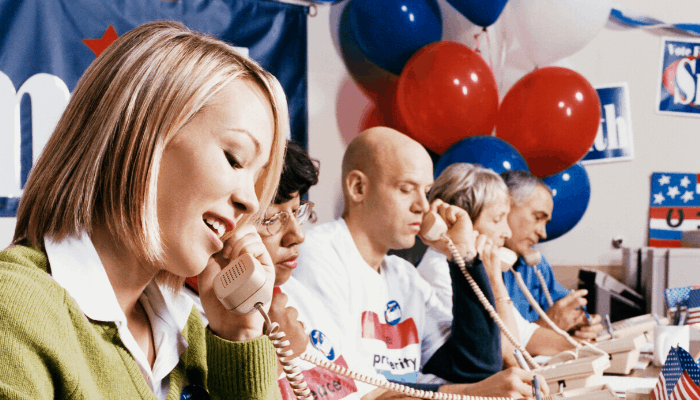

LATEST NEWS
BLOG - Week 1
BLOG - Week 2
BLOG - Week 3
BLOG - Week 4
BLOG - Week 5
Campaign Kickoff
Joe Lewis officially launched his campaign with a dynamic kickoff event, rallying supporters and outlining his vision for positive change.
Community Outreach
The campaign team actively engaged with local communities, listening to concerns, and building connections with residents.
Policy Announcements
Joe Lewis unveiled comprehensive policy proposals, addressing key issues such as immigration reform, healthcare accessibility, and infrastructure development.
Town Hall Meetings
Interactive town hall meetings allowed Joe Lewis to connect directly with constituents, answering questions and discussing solutions to community challenges.
Volunteer Events
The campaign mobilized volunteers for various events, fostering a sense of community involvement and grassroots support for Joe Lewis.